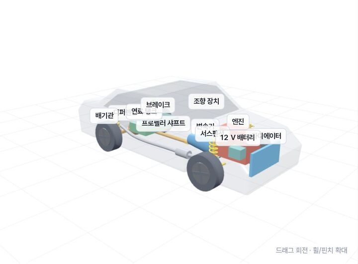
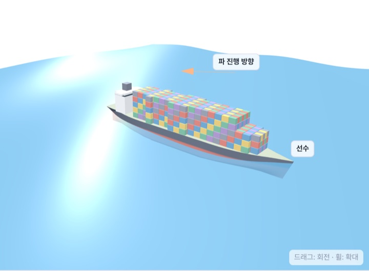
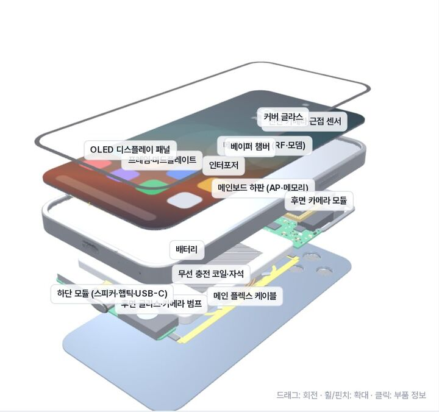
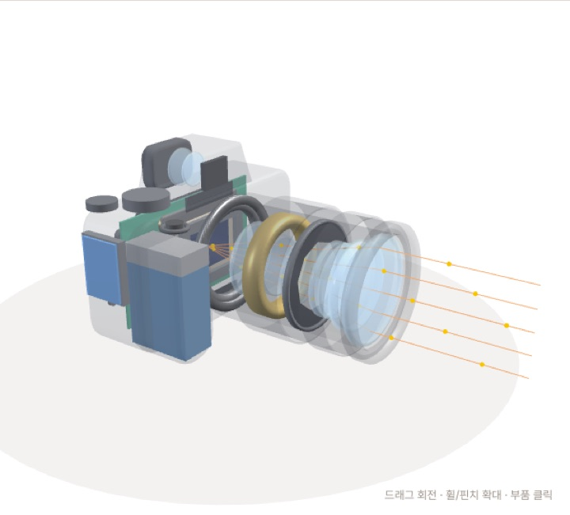
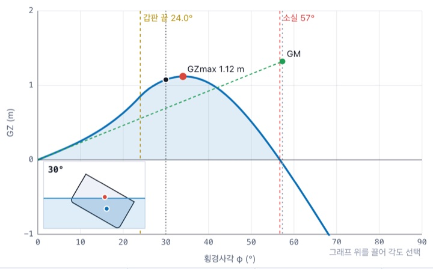
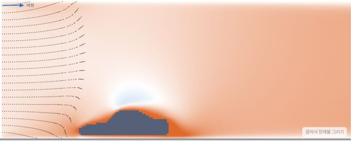
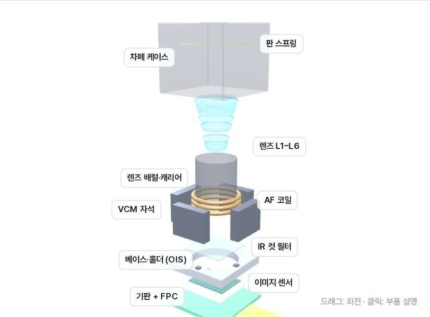
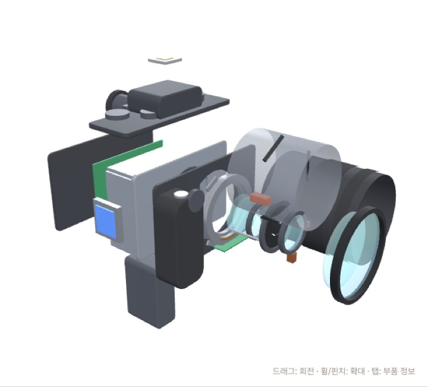

엔진에서 전기차까지
내연기관의 사이클에서 모터와 배터리로 동력원이 바뀌는 흐름을 따라갑니다.
차체를 투명하게 비춰 부품을 찾고, 파도 위에서 배를 흔들고, 스마트폰과 카메라를 한 겹씩 분해해 봅니다. 자동차 CarBook, 선박 ShipBook, 스마트폰 PhoneBook, 카메라 CameraBook이 함께 꽂힌 시스템 서가입니다.
4권 공개자동차 · 선박 · 스마트폰 · 카메라
조건에 맞는 책이 없습니다. 다른 검색어나 분야를 선택해 보세요.
질문 하나를 골라 시뮬레이터를 움직여 보세요. 각 실험은 해당 교과서의 그 장면으로 바로 이어집니다.

CarBook · 자동차자동차 속 부품은 어디에 숨어 있을까?차체를 투명하게 만들고 엔진·변속기·배터리의 위치를 3D로 찾아봅니다.직접 돌려 보기 →
ShipBook · 선박파도 속에서 배는 어떻게 흔들릴까?파장과 파향, 선속을 바꾸며 컨테이너선의 히브·피치·롤이 언제 커지는지 봅니다.직접 돌려 보기 →
PhoneBook · 스마트폰8 mm 두께 안에 무엇이 들어 있을까?유리부터 배터리·보드·카메라까지 부품을 눌러 가며 한 겹씩 펼칩니다.직접 분해해 보기 →
CameraBook · 카메라카메라 속에서 빛은 어디로 갈까?바디를 투명하게 비추고 렌즈에서 센서까지 빛의 길을 따라갑니다. DSLR로 바꾸면 거울이 길을 바꿉니다.직접 돌려 보기 →
ShipBook · 선박배는 몇 도까지 기울어도 다시 설까?무게중심 높이와 깊이, 폭을 바꾸며 GZ 곡선과 소실각이 어떻게 달라지는지 봅니다.직접 바꿔 보기 →
CarBook · 자동차달리는 차 주위로 공기는 어떻게 흐를까?차 옆모습 주위로 공기가 갈라지고 뒤에서 소용돌이치는 모습을 직접 그려 봅니다.직접 그려 보기 →
PhoneBook · 스마트폰카메라 모듈은 몇 mm 안에 무엇을 쌓을까?렌즈·VCM·OIS·이미지 센서가 얇은 모듈 안에 쌓이는 방식을 분해해 봅니다.직접 분해해 보기 →
CameraBook · 카메라미러리스 카메라를 뜯으면 무엇이 나올까?셔터·센서·보드·EVF와 렌즈 군을 한 겹씩 펼치고, 조립 순서대로 다시 맞춥니다.직접 분해해 보기 →각 책의 1장은 시스템 전체를 한눈에 보여 줍니다. 큰 그림을 본 다음 관심 있는 부품으로 내려가세요.
내연기관의 사이클에서 모터와 배터리로 동력원이 바뀌는 흐름을 따라갑니다.
부력에서 복원성, 파도 속의 운동까지 배가 바다를 견디는 원리를 잇습니다.
분해에서 출발해 두뇌인 AP와 열 관리, 그리고 전체 설계의 트레이드오프로 갑니다.
렌즈가 모은 빛이 센서에서 숫자가 되고, 처리 엔진을 거쳐 파일이 되는 길을 따라갑니다.
센서로 보고, 판단하고, 충돌을 피하는 자율주행차와 자율운항선박을 나란히 읽습니다.
전기차 팩과 스마트폰 셀, 선박의 전기 추진까지 전기 에너지를 다루는 방법을 비교합니다.
공기와 물, 두 유체 속에서 저항을 줄이고 추진력을 얻는 형상을 봅니다.